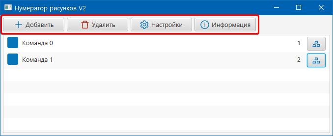
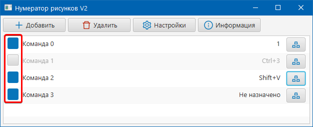
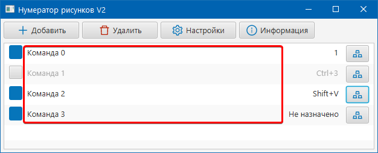
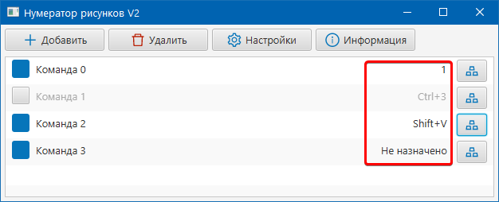
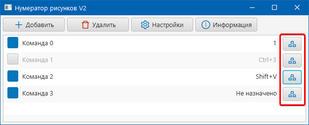
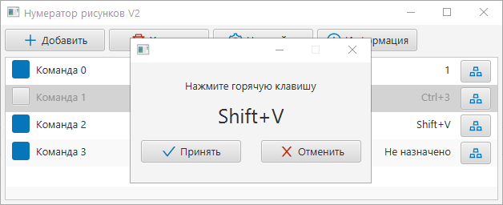
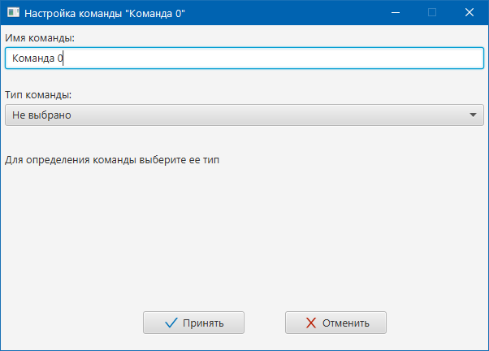
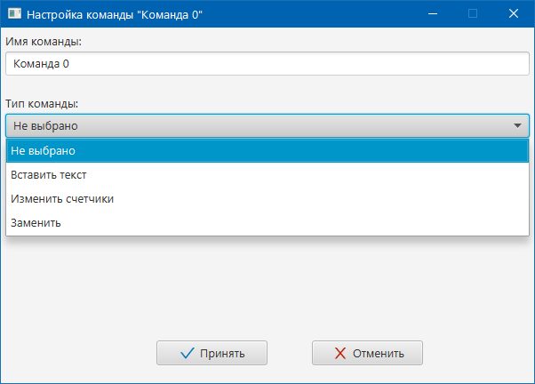
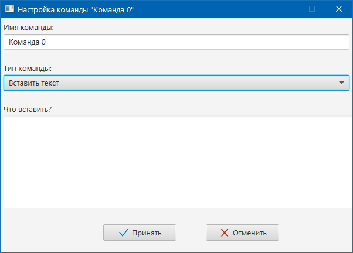

Руководство пользователя (в разработке)
Данное руководство поможет вам праильно использовать программу.
В нем вы найдете информацию о том, как создавать/удалять команды, а также о том, как правильно настраивать команды.
Содержание
- Основные элементы интерфейса
- Добавление/Настройка/Удаление команд
- Правила составления команд (с примерами)
- Перечень клавиш, используемых в командах
Основные элементы интерфейса
В главном окне программы расположены следующие кнопки (рисунок 1):

рисунок 1
| кнопка Добавить | Добавляет новую команду в список команд |
| кнопка Удалить | Удаляет выбранную команду из списка |
| кнопка Настройки | Открывает окно дополнительных настроек программы |
| кнопка Информация | Отображает руководство пользователя |
Под блоком кнопок расположен список команд. Каждая команда в списке обладает следующими элементами управления:
Переключатель активности команды (рисунок 2). Если переключатель не установлен, то команда выполняться не будет.

рисунок 2
Имя команды (рисунок 3). Для удобства использования каждой команде вы можете присвоить имя.

рисунок 3
Назначенная клавиша (комбинация клавиш) (рисунок 4). В этом поле отображается назначенная комбинация для команды.

рисунок 4
Кнопка назначения комбинации (рисунки 5, 6). Данная кнопка позволит вам присвоить команде клавишу или комбинацию клавиш. Если установлен переключатель активности, программа начнет отслеживать нажатия назначенной клавиши (комбинации) и выполнять действия, определенные в команде.

рисунок 5

рисунок 6
в началоДобавление/Настройка/Удаление команд
Для добавления команды необходимо нажать кнопку Добавить.
Для редактирования команды необходимо в списке команды дважды щелкнуть по ней левой клавишей мыши.
В окне настройки команды вы можете задать Имя команды, выбрать ее Тип, а также указать параметры команды (рисунки 7 - 9).

рисунок 7

рисунок 8

рисунок 9
Для каждого типа команд список параметров отличается.
| Тип команды | Параметры и их значения для команды |
| Не выбрано | Этот тип устанавливается для новых команд по умолчанию. Команды с данным типом не будут выполнять никаких действий |
| Вставить текст | Этот тип позволит вставлять текст, определенный в поле "Что вставить?" |
| Изменить счетчики | Этот тип команды позволит изменять счетчики без вставки какого-либо текста. Изменяемые счетчики указываются в поле "Что изменить?" |
| Заменить | Этот тип команды удалит текст, вставленный в поле "Что заменить?" и вставит текст, введенный в "На что заменить?" |
Кнопка Принять сохранит внесенные изменения. Кнопка Отменить восстановит команду до настройки.
Для удаления команды необходимо выбрать ее в списке и нажать кнопку Удалить.
в началоПравила составления команд
Для всех типов команд (кроме типа "Не выбрано") действуют общие правила составления. При составлении команды можно использовать три вида текста:
| Наименование | Описание | Пример | |
| Текст | Программа будет распознает текст как строку. Если данный текст используется для вставки, то он будет вставлен через буфер обмена так, как будто вы его туда предварителньо поместили (скопировали). Если текст указан для замены, то программа имитирует нажатие BACKSPACE столько раз, сколько символов в тексте. | Привет! |
|
| Шаблон счетчика | Шаблон используется для автоматической нумерации. При первом использовании программа
запомнит значение и проинициализирует счетчик если это требуется. Инициализируются по
умолчанию 0. При вставке или замене программа автоматически найдет этот шаблон, выполнит операцию, указанную в нем,
заменит шаблон на номер, далее будет рассматривать получившийся текст как просто текст.
Этот шаблон обязательно должен составляться по следующему правилу:
где: *ИМЯ* - уникальное имя счетчика. Допускается использовать любые буквы/цифры. Минимальная длина - 1 символ. Обязательный параметр. *ОПЕРАЦИЯ* - операция, выполняемая над счетчиком. Допустимые вариант: "+" увеличить значение, "-" уменьшить значение, "=" установить значение. Не обязательный параметр. *ЗНАЧЕНИЕ* - одна или несколько цифр, указывающих на сколько изменится счетчик или какое установится значение. Параметр применяется ТОЛЬКО в случае использования *ОПЕРАЦИЯ*. Внимание! Если шаблон счетчика составлен не верно, он будет рассаматриваться как простой текст! |
${id1}
|
|
| Шаблон клавиши | Этот шаблон позволяет эмулировать нажатия клавиш. Порядок нажатия клавиш соответсвует в последовательности
их в шаблоне. Если шаблон окружен текстом, то вставится левая часть текста до шаблона, выполнится шаблон,
вставится правая часть текста. Шаблон строится по следующему правилу:
где: *КЛАВИША* - наименование клавиши из перечня. Обязательный параметр. Внимание! Если шаблон счетчика составлен не верно, он будет рассаматриваться как простой текст! |
#{VK_3}
|
Текст и шаблоны можно комбинировать в одной команде. Количество шаблонов в одной команде не ограничено.
Примеры команд с пояснениями
Пример 1
Задача: нужно вставить простой текст "Привет, мир!" по нажатию клавиши 1.
Решение: Создаем команду. Назначаем горячую клавишу. В Настройках команды выбираем тип "вставить текст".
В поле "Что вставлять?" пишем "Привет, мир!" (без ковычек). Сохраняем команду, активируем, радуемся!
Результат нескольких нажатий: 1Привет, мир!1Привет, мир!1Привет, мир!
Пример 2
Задача: нужно вставить простой текст "Рисунок Х" по нажатию клавиши 1, где х автоматически присваемый номер.
Решение: Создаем команду. Назначаем горячую клавишу. В Настройках команды выбираем тип "вставить текст".
В поле "Что вставлять?" пишем "Рисунок ${id1+1} " (без ковычек). Сохраняем команду, активируем, радуемся!
Результат нескольких нажатий: 1Рисунок 1 1Рисунок 2 1Рисунок 3
Пример 3
Задача: нужно вставить простой текст "Рисунки Х - Х+2" по нажатию клавиши 1, где х автоматически присваемый номер.
Решение: Создаем команду. Назначаем горячую клавишу. В Настройках команды выбираем тип "вставить текст".
В поле "Что вставлять?" пишем "Рисунки ${id1+1} - ${id1+2} " (без ковычек). Сохраняем команду, активируем, радуемся!
Результат нескольких нажатий: 1Рисунки 1 - 3 1Рисунки 4 - 6 1Рисунки 7 - 9
Пример 4
Задача: нужно вставить простой текст "Рисунок Х" по нажатию клавиши 1, где х автоматически присваемый номер. Удалить 1, после вставки перейти на новую строку.
Решение: Создаем команду. Назначаем горячую клавишу. В Настройках команды выбираем тип "вставить текст".
В поле "Что вставлять?" пишем "#{VK_BACK_SPACE}Рисунок ${id1+1}#{VK_ENTER}" (без ковычек). Сохраняем команду, активируем, радуемся!
Результат нескольких нажатий: Рисунок 1
Рисунок 2
Рисунок 3
....пустая строка....
в началоПеречень клавиш, используемых в командах
В нем вы найдете информацию о том, как создавать/настраивать/удалять команды, а также о том, как правильно составить команду.
asdasda asd asd sad asd
в начало